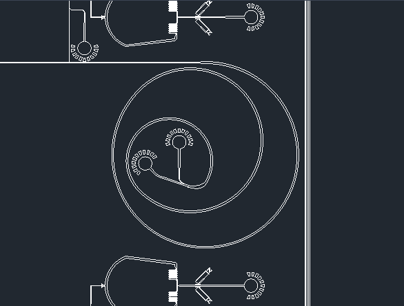
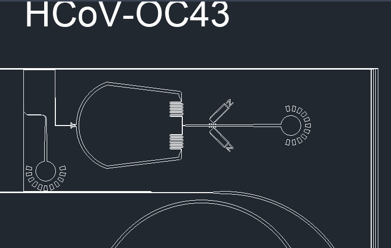
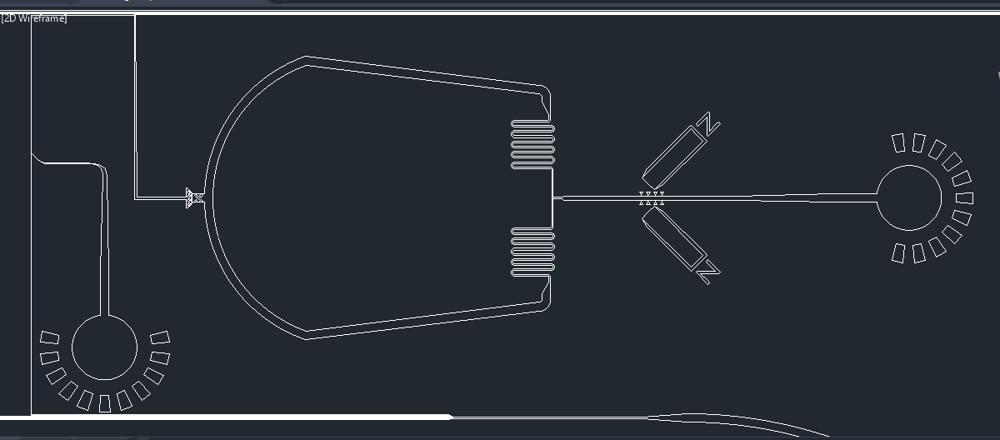

What is microfluidics?
Microfluidics is the study of systems able to process small quantities of fluids with the aid of channels, which measure from tens to hundreds of micrometers (μm). This field has emerged in recent years as a new area of research, with applications in medicine, biology, chemistry, and physical sciences.
Microfluidic devices enable the manipulation of small volumes of fluid precisely, allowing to perform an analysis with limited quantities of samples, while it:[1]
Shortens analysis time
and delivers faster results.
Provides high resolution and sensitivity
in detection or separation of molecules.
Creates a positive impact on the environment and a noticeable cost reduction
by reducing the amount of reagents used.
Figure 0. Applications: Microfluidics card from the Biosentinel spacecraft.
How are they made? (lithography printing process)
Microfluidic devices are developed using a technique known as lithography, originally developed for the creation of minor features on circuits. This process is used to transfer the exact shapes present on a mask to a surface of a suitable substrate. The process requires special polymers, such as polydimethylsiloxane (PDMS), that react to specific wavelengths of light to recreate the desired patterns on the substrate. Once the mold is created, it is possible to produce several devices using the original mold.[2]
The following external video exemplifies the fabrication in the laboratory of a device with photolithography:
In recent years, 3D printing has also been used to develop microfluidic devices. This technique allows the fabrication of a complete device in a single step from a computer model, creating three-dimensional structures that will allow for more challenging capabilities for these devices, which cannot be easily done with the lithography method described before.[3]
The microfluidic device: Prion disease
Transmissible spongiform encephalopathies (TSEs), also known as prion diseases, are fatal neurodegenerative disorders that can affect both humans and animals. The causative agents of TSEs are prions, pathogenic agents able to induce abnormal folding of specific cellular proteins called prion proteins, rapidly propagating.[4]
The team designed a device for proteinase K(PK) - mediated protein digestion, capable of detecting pathological prion protein; as a diagnostic tool for prion disease.
The microfluidic system exploits the differences in enzymatic susceptibility between normal prion protein (PrPc) and pathological prion protein (PrPSc). These two have identical primary structure, but differ at a higher structural level. Normal prion protein is protease sensitive, containing alpha helix, whereas the pathological prion protein has less alpha helix and more beta sheets, which causes the formation of aggregates, increasing its resistance to digestion by proteinase K.[5]
Designing the device with CAD software
The mask for the device was designed using AutoCAD software (Fig. 1). The microfluidics device contains the inlet where a solution containing brain cells with the normal or pathological prion protein is injected (Fig. 2). The solution proceeds to a filter near the inlet, preventing lumps and allowing for homogenization of the solution, which will later move through the micro-channels. The major component of the device is the enzymatic micro-reactor.

Figure 1. Pathological prion protein detector mask for prion disease (TSEs).

Figure 2. Expanded view of the microfluidic device.
The PDMS micro-channel contains PK-grafted magnetic beads that are immobilized by a magnetic field. These beads contain the proteinase K covalently bound. When the solution passes through the micro-channel, the normal prion proteins will interact with the beads and proteolysis will occur; whereas the pathological prion proteins will not interact, continuing to flow through. The solution, containing either digested normal prions or the undisrupted pathological prions, will be pumped out through the outlet, and recovered for further analysis. Below you can see a video that summarizes the device design process:
The extent of the proteolysis was studied as a function of residence time by changing the flow rate. In the presence of normal prion proteins, the flow rate diminishes due to the interaction and reaction with the PK-grafted beads; whereas in the presence of pathological prion protein, the flow rate will not be affected.[5] For further analysis, the recovered samples from the outlet can be run on Western Blot to observe if proteolysis occurred or not.
The usage of a micro-reactor as the one the team designed offers a variety of advantages, such as lower sample and reagent consumption, lower operating costs, full discrimination of the normal and pathological prion proteins in a few minutes, and low maintenance as the beads can be replaced without dismounting the system. As the digestion efficiency between normal and pathological forms is significant, the microfluidics device offers a more sensitive method of diagnosis of this disease.
The microfluidics device: SARS-CoV-2
As we are currently facing the COVID-19 pandemic, scientists in many research fields are finding ways to understand and treat this respiratory disease. According to a study conducted by the Human Microbiology Institute of New York, the SARS-Cov-2 virus contains prion-like domains that could be linked to the increase in affinity for the protein receptor found in human cells, ACE2. This examination of proteomic structure of the virus was performed with computer modeling.[6]
As our proposal, the team designed a microfluidic device in order to understand the interactions between the prion-like structures in the spike protein of 4 different coronaviruses, and the proteinase K, using a variation of the previous diagnostic mask (Fig. 3).
Figure 3. Prion-like protein detector for SARS-CoV-2, SARS-CoV, MERS-CoV, and HCoV-OC43.
The PDMS micro-channel contains PK-grafted magnetic beads that are immobilized by a magnetic field. These beads contain the proteinase K covalently bound. When the solution passes through the micro-channel, the normal prion proteins will interact with the beads and proteolysis will occur; whereas the pathological prion proteins will not interact, continuing to flow through. The solution, containing either digested normal prions or the undisrupted pathological prions, will be pumped out through the outlet, and recovered for further analysis. Below you can see a video that summarizes the device design process:
The device starts with two inlets: one containing a sample of a mixture of the spike proteins of SARS-Cov-2, SARS-Cov, MERS-Cov, and HCov-OC43; and the other containing different-sized beads bound to protein-specific antibodies. The beads are made in four different sizes, each size containing a different corresponding antibody. As the beads and the proteins interact, the solution will flow through the spiral microchannel (Fig. 4).
Figure 4. Dean Flow Fractionation spiral microchannel.
This device works on the principle of Dean Flow Fractionation. In this principle, particles when flowing through the spiral channel can be focused into distinct streams due to the superposition of size-dependent inertial lift forces and a drag force due to the Dean flow generated as a result of the centrifugal acceleration of the fluid. [7] As the solution spins, the proteins bound to the beads will be guided into specific outlets, which results in the sorting of the proteins depending on the coronavirus they were retrieved from (Fig. 5).
Figure 5. Device outlets for protein separation.
Once the samples are in their respective channels, a third inlet will pump in a solution to terminate the interaction of the antibodies with the protein. Once the protein and beads are separated, it will flow through a filter before reaching the enzymatic microreactor, preventing any beads from passing (Fig. 6).
Figure 6. Enzymatic microreactor for prion protein detection.
The protein will reach the microreactor, where the interaction between the proteinase K and the prion-like domains in the spike protein will be analyzed. The samples will be pumped out and recovered from the outlet. The flow rate will be recorded and a Western blot can be performed in order to observe if the proteins were degraded or not.
According to the computational model, the prion-like structure is present in the SARS-Cov-2 spike protein. This experiment will allow us to observe if the prion-like domain behaves as the prions in TSEs, by analyzing if it is sensible to proteinase K or not, as the pathological prions; leading to a new method of diagnosis similar to the one carried out for prion disease.
It will also allow observation in an experimental manner if the structures of the other 3 coronaviruses have a prion-like domain present or not. By understanding the functions and limitations of these prion-like domains, we can begin to understand how this unique structural element may contribute to the increased affinity for the ACE2 receptor, and seek therapeutics in order to address this specific structure.
Video-summary of the project
References
[1] F. Bragheri, R. Martinez, R. Osellame,(2016), Chapter 12.3 - Microfluidics,In Micro and Nano Technologies,Three-Dimensional Microfabrication Using Two-photon Polymerization, William Andrew Publishing, Pages 310-334, ISBN 9780323353212, https://doi.org/10.1016/B978-0-323-35321-2.00016-9.
[2] S. Cheriyedath, (2019), What is Microfluidics?, News Medical Life Science, Retrieved from: https://www.news-medical.net/life-sciences/What-is-Microfluidics.aspx.
[3] Waheed, S., Cabot, J. M., Macdonald, N. P., Lewis, T., Guijt, R. M., Paull, B., & Breadmore, M. C. (2016). 3D printed microfluidic devices: Enablers and barriers. Lab on a Chip, 16(11), 1993-2013. doi:10.1039/c6lc00284f.
[4] Center for Disease Control and Prevention (2018), Prion Diseases, U.S. Department of Health & Human Services, Retrieved from: https://www.cdc.gov/prions/index.html.
[5] Nel, A. L., Minc, N., Smadja, C., Slovakova, M., Bilkova, Z., Peyrin, J., . . . Taverna, M. (2008). Controlled proteolysis of normal and pathological prion protein in a microfluidic chip. Lab on a Chip, 8(2), 294. doi:10.1039/b715238h.
[6] Tetz, G.; Tetz, V. SARS-CoV-2 Prion-Like Domains in Spike Proteins Enable Higher Affinity to ACE2. Preprints 2020, 2020030422. doi: 10.20944/preprints202003.0422.v1
[7] Sarkar, A., Hou, H. W., Mahan, A. E., Han, J., & Alter, G. (2016). Multiplexed Affinity-Based Separation of Proteins and Cells Using Inertial Microfluidics. Scientific Reports, 6(1). doi:10.1038/srep23589